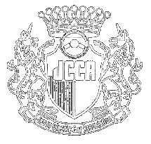
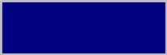
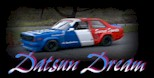
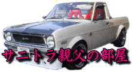
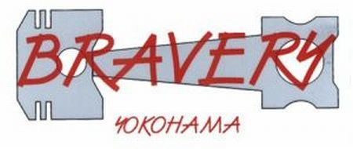

| TOP |
| TOP |
|
|
| Sponsor（50音順） |
| 昔から製品だけでなく色々な面でお世話になっている「ATTACK
RACING」さん OIL，添加材のご協力を頂いております |
|
| ボディワークの強い味方「Garage飛鳥」さん 塗料その他色々とご協力頂いております |
|
| TOOL BOX | プライベートチューンの強い味方、レンタルガレージ「TOOL
BOX」さん（Webサイト工事中） 色々なパーツをご提供頂いております |
 |
オートキャンプ場の「BOWER HOUSE JAPAN」さん こちらの支配人さんはレース経験者 色々とご支援頂いております |
| BUTLER246 | ベース車両を提供して頂いた「BUTLER246」さん |
 |
フルオーダーマフラーショップ「Volcano」さん 第２戦に向けてチタンマフラーを製作して頂きました 超軽量かつすばらしい仕上がりです！！ |
| KPファクトリーお気に入りのブレーキパッド「Project
μ」さん ブレーキパッド，ブレーキフルードのご協力を頂いております |
|
| 脱着式ステアリングボス"RAPFIX"で有名な「Works
Bell」さん ステアリングボスをはじめ色々とご協力を頂いております |
| RACE |
 |
KPファクトリーも参戦するクラシックカーレースの主催者「日本クラシックカー協会」さん |
| Friends |
| 宮城のKP集団 「日本燃圧協会」 サイト訪問時は 火気厳禁！？ |
2T-Gオーナーズクラブ 「バスターズ」 |
||
| かっくんさんのサイト | 70系カローラ オーナーズクラブ 「Group5」 CGが超すてきです |
||
| おぽよんさんのサイト |  |
日本燃圧協会 Ｋ．さとー氏のサイト |
|
| 赤城のあばれん坊 「Dog Fight」 彼らの熱い走りに注目！！ |
AW誌に旧車チューンで頻繁に登場する有名ショップ「石塚自動車」に集う人々のサイト | ||
| 太伊矢屋さんのサイト 走行会主催はもちろんチューニングも手掛ける頼もしいタイヤ屋さんです ご用命はすけさんまで |
香港のKP61 Fans Mr Tsang sir のサイト |
||
 |
Datsun Dreamさんのサイト | ニュージーランドの Mr Jamie Hodgins が所属する「Club K」 V8ターボ搭載もいますぜ！ |
|
| TSカップにサニーで参戦されている「BCC Factory」さんのサイト | TSカップに参戦されているOGURAさんのサイト「310-SUNNY PAGE」 | ||
 |
九州の旧車愛好会 「サニトラ親父の部屋」 |
 |
「ブレイバリィ」さんのサイト プライベーターさん必見です |
| 「RacingHouse亜斗夢」さん カフェトレドトリイサニーが復活！必見です |
ガレージモリムラチューンの凄いKPに乗るtakeさんのサイト「GoGo KP」 |
| Magazin |
| 当サイトはリンクフリーです、相互リンクはメールにてご連絡ください。 |
|
|
| All Rights Reserved, Copyright(C) 2001-2004,KP-FACTORY |